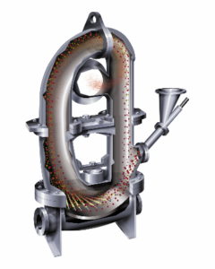
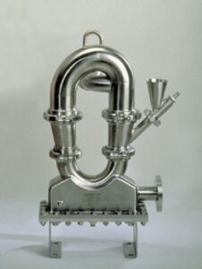
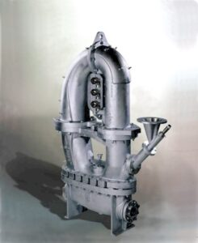
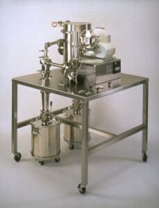

Fluid Energy Mill Overview
The original invention of loop or donut mill is credited to Cleo Harold Kidwell and Nicholas NK Stephanoff (founder of Fluid Energy Processing and Equipment).1
An early application of the Fluid Energy Jet-O-Mizer was for pulverizing solid, heating fuels.2.
Since that time, pulverization applications have expanded to other granular solids.
Here we share a few examples of material comminution with this type of jet mill.

Propellant Grinding
A Fluid Energy Model 0304 Jet-O-Mizer was designed to grind solid rocket propellant to a 2 m average particle size at a rate of 500 lbs/hr.
When designing systems for propellants/explosives, special construction features are utilized.
In these cases, Fluid Energy Processing applies procedures that are found in US government specifications relating to the fabrication of milling systems for propellant/explosives use.
Due to its grinding characteristics, the Jet-O-Mizer is most frequently used in the milling of RDX, HMX and black powder. Our Micro-Jet is typically used to grind oxidizers, such as Ammonium Perchlorate.

Mineral and Pigment Grinding
A Fluid Energy Model 0808 Jet-O-Mizer utilizes 1,200-2,200 SCFM of air compressed to 100 psig for mineral and pigment grinding.
It is equipped with replaceable cast Ni Hard liners for superior abrasion resistance. The outlet is equipped with adjustable vanes for fine-tuning the particle size distribution.
The Model 0808 is routinely used to grind carbon black, talc, calcium carbonate and kaolin.
When grinding carbon black or minerals used in the filler industry, super-heated steam is typically used as the grinding fluid. Typical steam rates range from 2,000-7,000 lbs/hr. Steam pressure and temperature requirements can range up to 200 psig and 750ºF (400ºC).

Sanitary Drug Grinding System
A sanitary Model 0101 Tabletop Jet-O-Mizer System was designed for the continuous production of a topical anesthetic. The Model 0101 produces 5 lbs/hr of product at a less than 5 m average particle size.
The system includes all integral piping and instruments, a screw feeder, filter silencer, cyclone collector and laboratory baghouse. Product collection cans were provided for cyclone and baghouse collection.
All components are constructed in type 316 stainless steel with a pharmaceutical polish and are completely assembled on a 4-foot square, portable table. The system utilizes 15-30 scfm of air or nitrogen compressed to 100 psig.
These case studies are just a few examples of granular solids that can be jet-milled in a loop mill. A table of additional applications can be found here on the Jet-O-Mizer equipment web page.
The Jet-O-Mizer has been developed with many distinct design features to consume less power, provide a greater range of throughput (50 gram/hr to 20,000 lb/hr) and ensure exceptional finished product quality. Thorough application engineering allows the determination of the ideal operating conditions for specific raw materials. Production requirements are integrated into a complete Jet-O-Mizer system.
References:
1. R.H. Perry and D.W. Green, Chemical Engineering Handbook, 8th Ed., 2007, p. 21-62.
2. Stephanoff, Nicholas NK, 1951, Method for Treating Fuel, US2550390.
